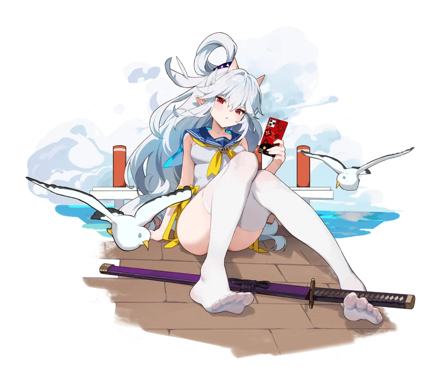
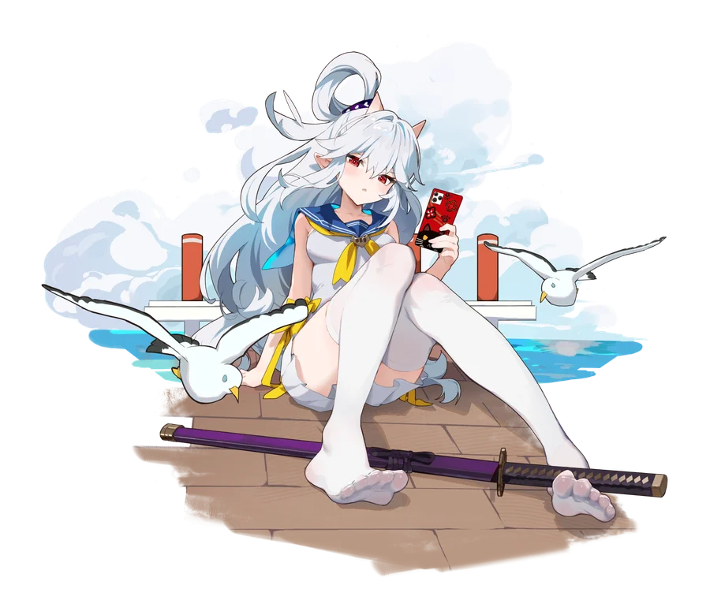
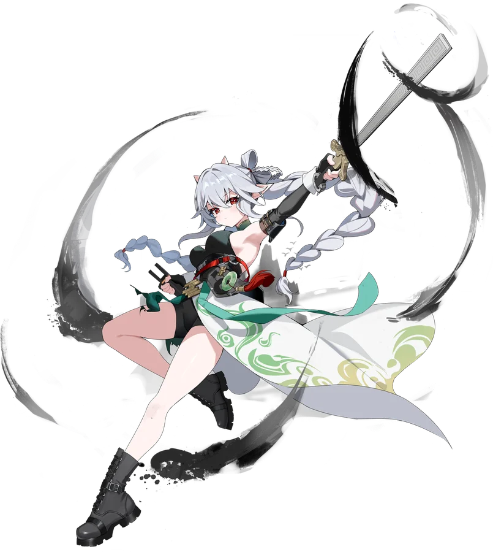

美咲 · 太刀使
三神教教主的护法。三神教是和星辉院齐名的又一宗教机构。它不光承担着福利院的工作，还有和本苍院一样的文献研究能力。美咲的龙崎家与天王寺家，米泽家同是三神教三大家族。
指定4格内的一个敌方角色，造成2点伤害并获得1层剑气（每层使自身攻击力+1，满3层时攻击力额外）。
PVE指定4格内的一个怪物，造成2点伤害并获得1层剑气（每层使自身攻击力+1，满3层时攻击力额外）。
战斗时，如果自身攻击命中或闪避成功，获得1层剑气（每层使自身攻击力+1，满3层时攻击力额外），最多叠加3层。被击倒后，清除所有剑气（每层使自身攻击力+1，满3层时攻击力额外）层数。
主动技能射程增加至6，当剑气（每层使自身攻击力+1，满3层时攻击力额外）满3层时使用主动技能，将消耗2层剑气（每层使自身攻击力+1，满3层时攻击力额外）并获得1张名刀：嘎呜切。 美咲的名刀：嘎呜切费用降低1。
基础资料
PVE 特性
- 达到1星时攻击力+1
- 达到2星时攻击力+2
- 达到3星时攻击力+1、移动速度+2
默认


羁绊皮肤
战斗女仆
和姬梦枫不一样的是，美咲这身确实不是她自己想这么穿的。 原因想必也都知道了，就是三神教御主照的功劳。 雅央平时都不可能出现在神社里，而凛也依旧在上演“离家出走”的戏码。 这时候只有老实的美咲遭殃了，照只能逮着美咲当换装娃娃。 因为御主她真的很喜欢洋装啊。那没办法，作为侍卫的美咲也只能如此了。 唯一和姬梦枫一样的就是穿着这身还能完美的完成护卫任务，只能说不愧是美咲。 不过还是得说声谢谢御主大人。
真龙御礼
美咲这身装扮完全是照借助“龙王祭”向外界展示三神教实力表演。 在联合城有这么一个都市传说，相传有几件灾厄之物和几件祝福之物。 每个东西都以不同的形态沉睡在联合城或这个世界的某些地方。 他们都有着自己的代号和外形。 “真龙御礼”便是其中之一。 与其说三家是在侍奉三神教，不如说三神教在保护三家。 有传言“真龙御礼”是一把蓝色的刀，又有传言“真龙御礼”是一个饰品。 但是到底是什么？真假难辩。 不过当前，龙崎美咲她就是人们口中说的“真龙御礼”。
魔女兵器

墨韵圆舞
对于龙崎美咲而言，尝试新事物、了解世界上不同的文化是她的一大乐趣。 此前她曾尝试包粽子。这种通过食物传递精神寄托，赞颂人和事的节日，使她很是开心。 而今天，她尝试的是以书法为核心的文房四宝。这种古老的技艺虽已鲜有人使用，却因修身养性的价值，成为许多年轻人追捧的对象。尽管入门门槛较高，但一旦掌握，成就感便会油然而生。 美咲学习书法或许略显笨拙，但若论舞刀弄剑，她定能得心应手。 在朋友的指导下，她将墨迹在纸笔间勾勒出的韵律感，自创了一套行云流水的“墨舞”：既有墨色跃然纸上的灵动，又带着刀剑挥舞的刚毅，仿佛她正以刀剑在巨大的白纸上挥洒创作，韵味十足。 果然，美咲是个天才呢。
共 13 个表情，点击可放大。
官方 wiki 没有这角色的 /获取 页，头像、名片、卡牌、骰子的完整清单暂缺；下方「档案」里保留了画廊中的零散素材。
人物传记
和雅央以及教主是青梅竹马，与青山小町是好友。一直在追查“天王落”事件的真相。
皮肤故事
战斗女仆
和姬梦枫不一样的是，美咲这身确实不是她自己想这么穿的。 原因想必也都知道了，就是三神教御主照的功劳。 雅央平时都不可能出现在神社里，而凛也依旧在上演“离家出走”的戏码。 这时候只有老实的美咲遭殃了，照只能逮着美咲当换装娃娃。 因为御主她真的很喜欢洋装啊。那没办法，作为侍卫的美咲也只能如此了。 唯一和姬梦枫一样的就是穿着这身还能完美的完成护卫任务，只能说不愧是美咲。 不过还是得说声谢谢御主大人。
真龙御礼
美咲这身装扮完全是照借助“龙王祭”向外界展示三神教实力表演。 在联合城有这么一个都市传说，相传有几件灾厄之物和几件祝福之物。 每个东西都以不同的形态沉睡在联合城或这个世界的某些地方。 他们都有着自己的代号和外形。 “真龙御礼”便是其中之一。 与其说三家是在侍奉三神教，不如说三神教在保护三家。 有传言“真龙御礼”是一把蓝色的刀，又有传言“真龙御礼”是一个饰品。 但是到底是什么？真假难辩。 不过当前，龙崎美咲她就是人们口中说的“真龙御礼”。
墨韵圆舞
对于龙崎美咲而言，尝试新事物、了解世界上不同的文化是她的一大乐趣。 此前她曾尝试包粽子。这种通过食物传递精神寄托，赞颂人和事的节日，使她很是开心。 而今天，她尝试的是以书法为核心的文房四宝。这种古老的技艺虽已鲜有人使用，却因修身养性的价值，成为许多年轻人追捧的对象。尽管入门门槛较高，但一旦掌握，成就感便会油然而生。 美咲学习书法或许略显笨拙，但若论舞刀弄剑，她定能得心应手。 在朋友的指导下，她将墨迹在纸笔间勾勒出的韵律感，自创了一套行云流水的“墨舞”：既有墨色跃然纸上的灵动，又带着刀剑挥舞的刚毅，仿佛她正以刀剑在巨大的白纸上挥洒创作，韵味十足。 果然，美咲是个天才呢。
画廊其他素材

本地未收录该角色的语音台词。